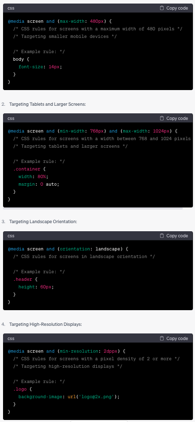

Media Queries
Media queries create responsive designs that adapt to different devices and screen sizes, providing a better user experience across a range of platforms and devices.
- Media queries are a CSS feature.
- Media queries work by specifying a condition or set of conditions in CSS. If those conditions are met, the associated styles will be applied.
- The conditions involve the properties of the device, such as screen width, height, aspect ratio (the ratio of width and height), device orientation (portrait and landscape), resolution, or even the type of device (e.g., screen, print, and speech).
- Media queries consist of media type and media features.
- Media type: Targets a specific type of device. Common values include: all (all devices and media types), screen (devices with visual output), print (applies when printing documents), and speech (applies to screen readers).
-
Media features: Represents a specific feature of the user's device. Here are some examples:
- Width and height:
- max-width: Maximum width of the viewport.
- min-width: Minimum width of the viewport.
- max-height: Maximum height of the viewport.
- min-height: Minimum height of the viewport.
- Orientation: Represents the device's orientation, either landscape or portrait.
- Aspect Ratio: The ratio of width and height of the device's screen.
- Resolution: Represents the pixel density of the device.
- Device type: Represents the type of input method available, such as pointer (mouse or touchscreen) or hover (when the cursor hovers over an element).
- color: Represents the number of bits per color component of the device.
- grid: Represents whether the device is able to support grid-based layouts.
Media type and media features can be combined to create targeted CSS rules based on the device, enabling customized rendering of the website.
